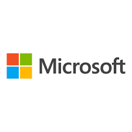

MICROS0FT
.png) Microsoft Corporation is an American multinational technology conglomerate headquartered in Redmond, Washington.[2] Founded in 1975, the company became highly influential in the rise of personal computers through software like Windows, and the company has since expanded to Internet services, cloud computing, video gaming and other fields. Microsoft is the largest software maker, one of the most valuable public U.S. companies,[a] and one of the most valuable brands globally.
Microsoft was founded by Bill Gates and Paul Allen to develop and sell BASIC interpreters for the Altair 8800. It rose to dominate the personal computer operating system market with MS-DOS in the mid-1980s, followed by Windows. During the 41 years from 1980 to 2021 Microsoft released 9 versions of MS-DOS with a median frequency of 2 years, and 13 versions of Windows with a median frequency of 3 years. The company's 1986 initial public offering (IPO) and subsequent rise in its share price created three billionaires and an estimated 12,000 millionaires among Microsoft employees. Since the 1990s, it has increasingly diversified from the operating system market. Steve Ballmer replaced Gates as CEO in 2000. He oversaw the then-largest of Microsoft's corporate acquisitions in Skype Technologies in 2011,[3] and an increased focus on hardware[4][5] that led to its first in-house PC line, the Surface, in 2012, and the formation of Microsoft Mobile through Nokia. Since Satya Nadella took over as CEO in 2014, the company has changed focus towards cloud computing,[6][7] as well as its large acquisition of LinkedIn for $26.2 billion in 2016.[8] Under Nadella's direction, the company has also expanded its video gaming business to support the Xbox brand, establishing the Microsoft Gaming division in 2022, which is currently[b] the third-largest gaming company in the world by revenue,[9] following the 2023 acquisition of Activision Blizzard for $68.7 billion.[10]
Microsoft Corporation is an American multinational technology conglomerate headquartered in Redmond, Washington.[2] Founded in 1975, the company became highly influential in the rise of personal computers through software like Windows, and the company has since expanded to Internet services, cloud computing, video gaming and other fields. Microsoft is the largest software maker, one of the most valuable public U.S. companies,[a] and one of the most valuable brands globally.
Microsoft was founded by Bill Gates and Paul Allen to develop and sell BASIC interpreters for the Altair 8800. It rose to dominate the personal computer operating system market with MS-DOS in the mid-1980s, followed by Windows. During the 41 years from 1980 to 2021 Microsoft released 9 versions of MS-DOS with a median frequency of 2 years, and 13 versions of Windows with a median frequency of 3 years. The company's 1986 initial public offering (IPO) and subsequent rise in its share price created three billionaires and an estimated 12,000 millionaires among Microsoft employees. Since the 1990s, it has increasingly diversified from the operating system market. Steve Ballmer replaced Gates as CEO in 2000. He oversaw the then-largest of Microsoft's corporate acquisitions in Skype Technologies in 2011,[3] and an increased focus on hardware[4][5] that led to its first in-house PC line, the Surface, in 2012, and the formation of Microsoft Mobile through Nokia. Since Satya Nadella took over as CEO in 2014, the company has changed focus towards cloud computing,[6][7] as well as its large acquisition of LinkedIn for $26.2 billion in 2016.[8] Under Nadella's direction, the company has also expanded its video gaming business to support the Xbox brand, establishing the Microsoft Gaming division in 2022, which is currently[b] the third-largest gaming company in the world by revenue,[9] following the 2023 acquisition of Activision Blizzard for $68.7 billion.[10]
 Microsoft has been market-dominant in the IBM PC–compatible operating system market and the office software suite market since the 1990s. Its best-known software products are the Windows line of operating systems and the Microsoft Office and Microsoft 365 suite of productivity applications, which most notably include the Word word processor and Excel spreadsheet editor. Its flagship hardware products are the Surface lineup of personal computers and Xbox video game consoles, the latter of which includes the Xbox network; the company also provides a range of consumer Internet services such as Bing web search, the MSN web portal, the Outlook.com email service and the Microsoft Store. In the enterprise and development fields, Microsoft most notably provides the Azure cloud computing platform, Microsoft SQL Server database software, and Visual Studio.
Microsoft is considered one of the Big Five American information technology companies, alongside Alphabet,[c] Amazon, Apple, and Meta.[d] In April 2019, Microsoft reached a trillion-dollar market cap, becoming the third public U.S. company to be valued at over $1 trillion. It has been criticized for its monopolistic practices, and the company's software has been criticized for problems with ease of use, robustness, and security.